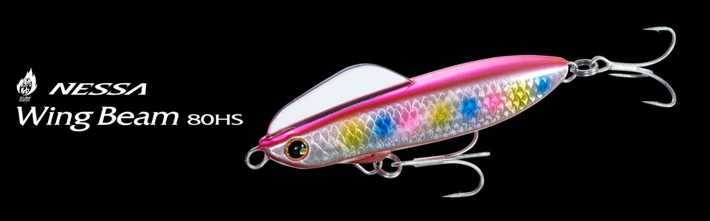
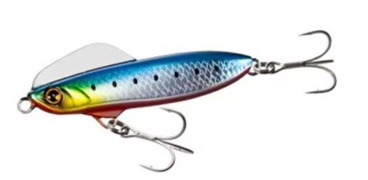
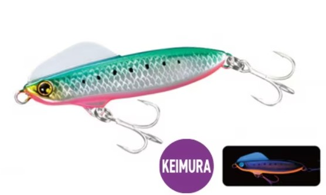
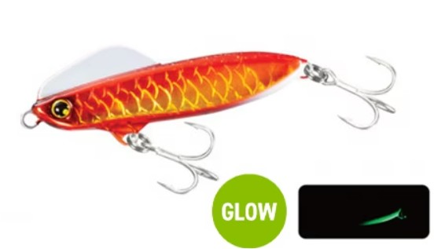
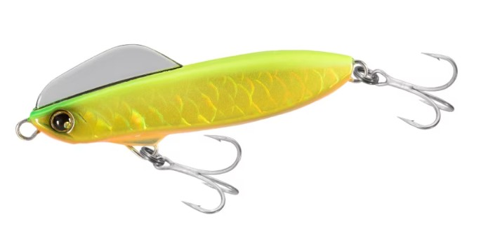
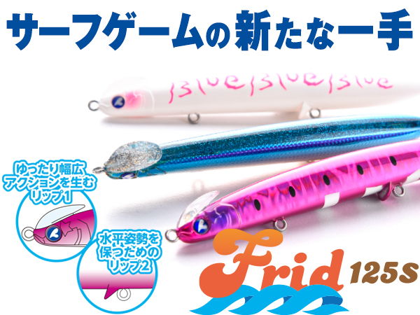
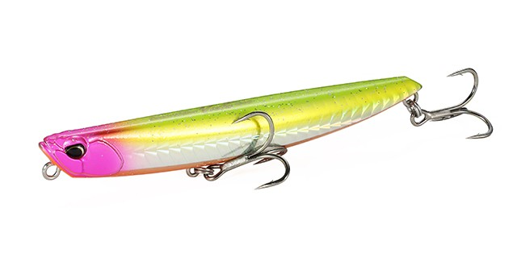

ウィングビーム80HS
（熱砂 ネッサ）
ウィングビーム80HS（Wing Beam 80HS）はSHIMANO（シマノ）熱砂（ネッサ）ブランドのヘビーシンキングペンシルです。
「シンキングペンシルの飛距離とミノーのような大きなウォブリングアクション」を両立するコンセプトで開発され、80mm・35gというメタルジグに迫るコンパクトさと重量ながら、平均飛距離97m超・100mクラスのポテンシャルを持つのが最大の魅力です。

画像出典:SHIMANO公式HP
スペック
- メーカー
- SHIMANO（シマノ）
- タイプ
- ヘビーシンキングペンシル
- 全長
- 80mm
- 自重
- 35g
- フック
- #4×2
- リング
- #4
- 飛距離
- 平均97m超／100mクラス
- ターゲット
- ヒラメ・マゴチ・青物
- 価格
- 1,815円（税込）
- 発売
- 2023年春
▼今すぐチェック

ウィングビーム80HSの特徴
シンキングペンシルの飛距離と、ミノー顔負けのウォブリングアクションを両立
-
メタルジグに迫るコンパクトさと重量で圧倒的な飛距離
80mm・35gというコンパクトなボディに重量を集約し、後方寄りの重心システムとヘッド部のウィング機構により平均97m超・100mクラスの飛距離を実現している。
-
単調になりがちなシンペンとは一線を画す激しいウォブリングアクション
シンキングペンシルとミノーを組み合わせたハイブリッド設計で、ミノーにも負けない大きなウォブリングアクションを生み出し、広範囲の探索を効率化する。
-
太軸フックで大型魚にも対応
ヒラメ・マゴチだけでなく、太軸フック搭載により掛かった際の青物などの大型魚にも対応できる強度を確保している。
ウィングビーム80HSの使い方
基本の巻きだけで高いアピール力を発揮するため、広範囲をテンポよく探るサーチベイトとして使いやすい。
デッドスローリトリーブでもアクションが失われにくく設計されているため、ボトム付近をじっくり探る場面にも対応。後方重心を活かしたリフト&フォールでは、バックスライド気味にフォールさせられるため、食いが渋いシビアな状況でも口を使わせやすい。
ウィングビーム80HSの得意な状況
サーフや堤防からの遠投でヒラメ・マゴチのポイントを広く探りたい状況が最大の出番。
飛距離が武器になるため、沖のブレイクやカケアガリまで届かせたい場面や、広範囲をテンポよくサーチしたい場面で特に強い。太軸フック仕様のため、青物が交じる状況でも安心して投入できる。
ワンポイント
アクションが強めのルアーなので、食いが渋い時はリフト&フォールでバックスライドを絡めると口を使わせやすくなります。
広範囲を素早くサーチしたい状況ではただ巻き中心、ピンポイントをじっくり攻めたい状況ではデッドスローに切り替えるとメリハリが出ます。
仕様バリエーション
| 仕様 | 型番 | 特徴 |
|---|---|---|
| 通常仕様 | XG-880S | レギュラーカラーラインナップ。オールラウンドに使える基本仕様 |
| イワシエディション | XG-880U | マイワシ・カタクチイワシに寄せた専用カラー。イワシパターン時の専用ローテーション用 |
ウィングビーム80HSはサイズ展開自体は80mm・35gの1サイズだが、レギュラーカラーとイワシエディションの2仕様で展開。ベイトがイワシに偏る状況ではイワシエディションを、それ以外の場面ではレギュラーカラーを軸にローテーションを組むのが基本の使い分けになる。
人気カラー
ウィングビーム80HSは全5色展開。サーフでオススメのカラーを厳選して紹介します。

001 キョウリンイワシリアルなイワシ配色の代表カラー。澄み潮やデイゲームなど、オールラウンドに使える基準の1本。

013 キョウリンケイムライワシグリーンバックのイワシ配色にケイムラ（紫外線発光）とピンクベリーをプラス。朝夕マズメや曇天など光量の少ない時間帯に。

014 キョウリンアカキングローサーフの定番アカキンに、腹部のグロー（蓄光）を組み合わせたカラー。濁り潮や夜明け前後のローライトに強い。

015 Aヒラメゴールドチャートとゴールドで視認性とフラッシングを両立したヒラメ狙いのカラー。濁りが入った日や、サーフでアピールを強めたい時に。
画像出典:SHIMANO公式HP
ウィングビーム80HSに似ているルアー
-
 オーバードライブ107S
DAIWA
詳細はこちら＞
オーバードライブ107S
DAIWA
詳細はこちら＞
全長107mm・自重40gの遠投ヘビーシンキングペンシル。飛距離重視で大型ベイトパターンに対応する考え方がウィングビーム80HSと近い。
-

フリッド125S ブルーブルー 詳細はこちら＞全長125mm・自重37gのシンキングペンシル。後方重心設計による飛距離とサーフのヒラメ・マゴチ狙いという用途が共通する。
-

ビスタ100S DUO 詳細はこちら＞全長100mm・自重34gのジグミノー。サーフのフラットフィッシュを飛距離とレンジキープで攻略するという狙いどころが重なる。